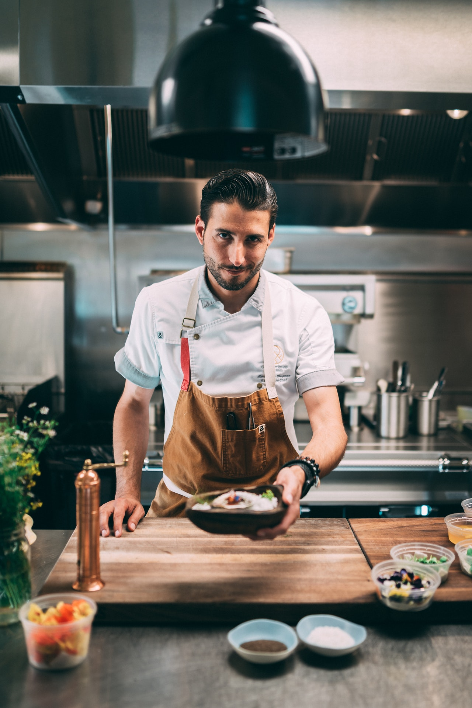
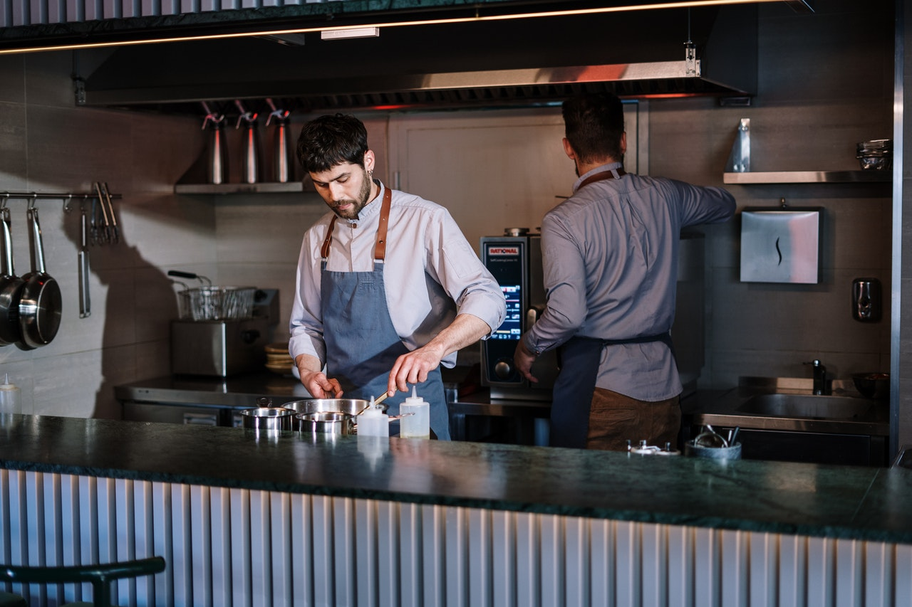

Sobre Nosotros
 Huh?, que escucho, quieres saber mas sobre nosotros?, pues bien, contamos con 4 sucursales en Quito y Guayaquil, de momento, tenemos planes para expandirnos no te preocupes que de aqui en un año o unos meses estamos mas cerca de lo pensabas, nuestros chefs son profecionales maestros de la gastronomia que le an dedicado horas a la cocina, son mas que empleados son amigos, son familia todos unidos para complacer a tu paladar. Comenzamos hace tan solo 4 años y hemos trabajado muy duro para llegar hasta aqui nos y pese a que nuestro menu es variado nos especialisamos en la comida Tex Mex, y que es bueno se define facilmente como las costumbres culinarias y los platos de la gente mexicana que reside en Texas. Es la fusion de 2 estilos, 2 formas de comprender la cocina pero no tan diferentes si de ingredientes se trata. Porque?, pues porque aqui nos encanta el sabor picante y la vida que le dan a nuestros platillos
Nuestra Historia
 Y nuestra historia?, bueno ya les he contado un poco, comenzamos hace tan solo 4 años fue un comienzo dificil es curioso todo comenzo como una simple ambicion que compartia en mi juventud con otras 2 personas por supuesto no fue facil la competencia es muy dura en el mundo culinario pero con dedicacion, tenacidad y creatividad supimos destacar de entre la mayoria, le dimos un toque especial a lo que preparamos, una marca, una firma. Y ahora nos encontramos aqui 4 años despues y quien lo diria 3 nuevas sucursales y nuestra ambicion no acaba.